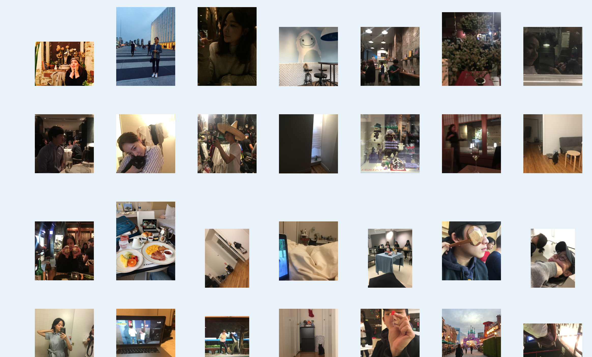
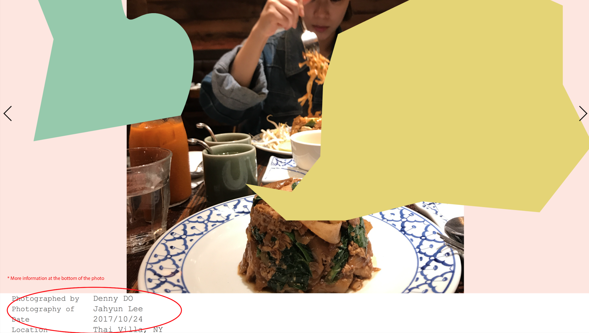
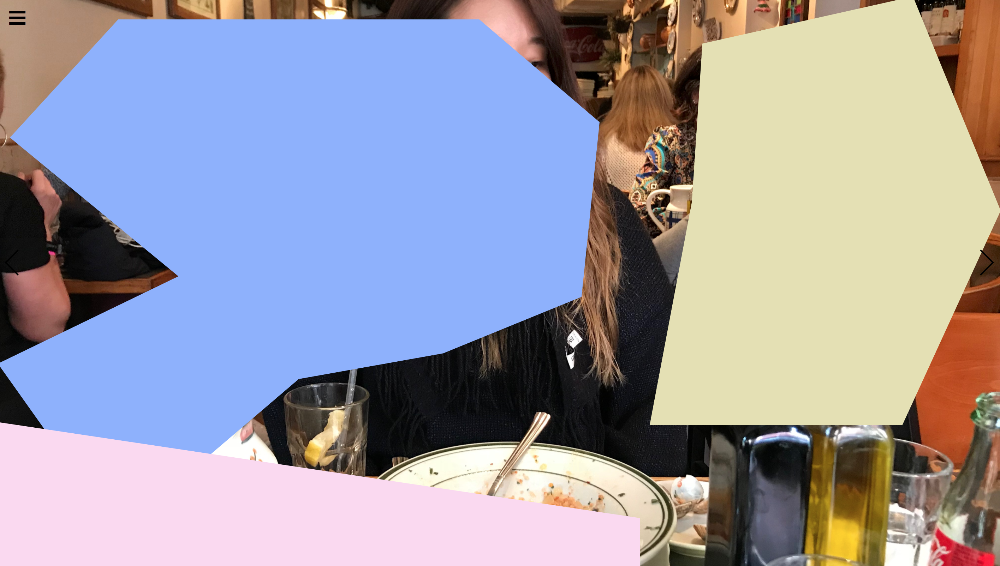
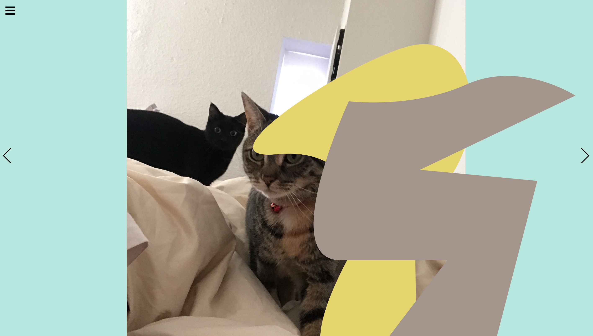
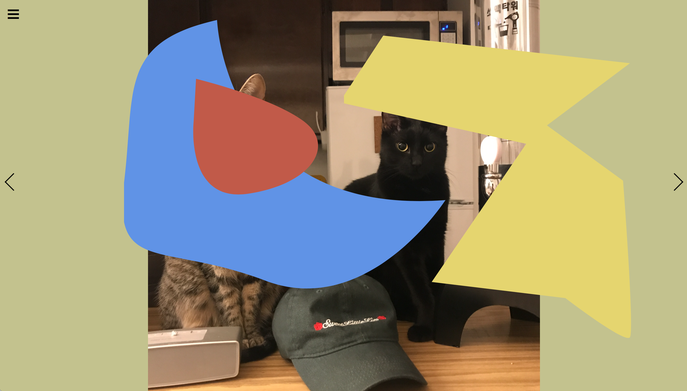

"Home" button lets you to come back to the index page.
"Photo Index" button takes you to the page that has
all of the photos in the archive.
The two arrows, on left and right, will take you to
one of the photos in the archive with the shapes upon it.
2. Photo Index

The Photo Index page has all of the photos in the archive.
This page gives the viewers a full view of the selected photos.
You can scroll down a little to see more information* of the photos.

This page gives the viewers a full view of the selected photos.
3. Photos
Here are some photos from the archive.



You can scroll down a little to see more information* of the photos.
4. Interaction
The shapes on the photos avoid following cursor's movement.
The distraction lets users to interact with the archive by
letting the users to find unexpected scene in the photos.
The distraction lets users to interact with the archive by
letting the users to find unexpected scene in the photos.
Links
1. DISTRACTION